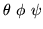
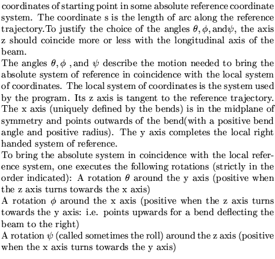
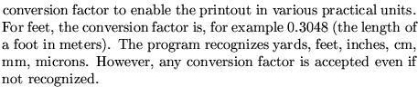
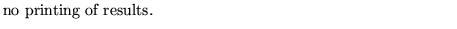
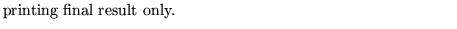
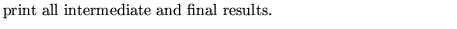
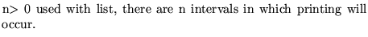
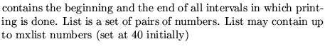

Input formatParameter definitions
LAYOut printing of machine..(up to 80 char)
s x y z 
conv mprint [list]
s x y z

conv

mprint
-2 
-1 
0 
n

list

Examples
The example taken from demo1 will give the coordinates of the endpoint of the lattice and the angles defined by the tangent to the reference trajectory within an absolute reference system. The units used are meters.
layout 0 0 0 0 0 0 0 1.0 -1,